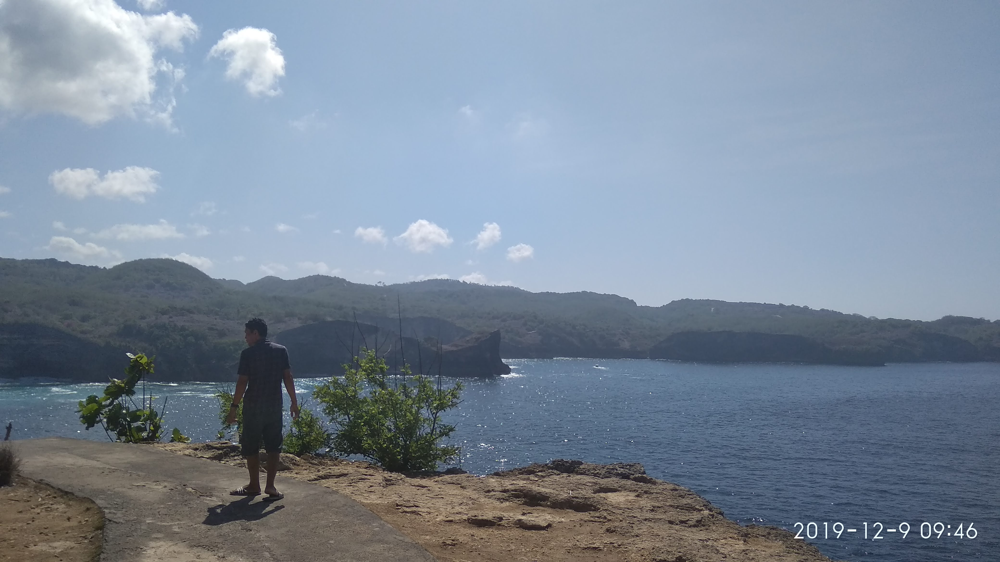
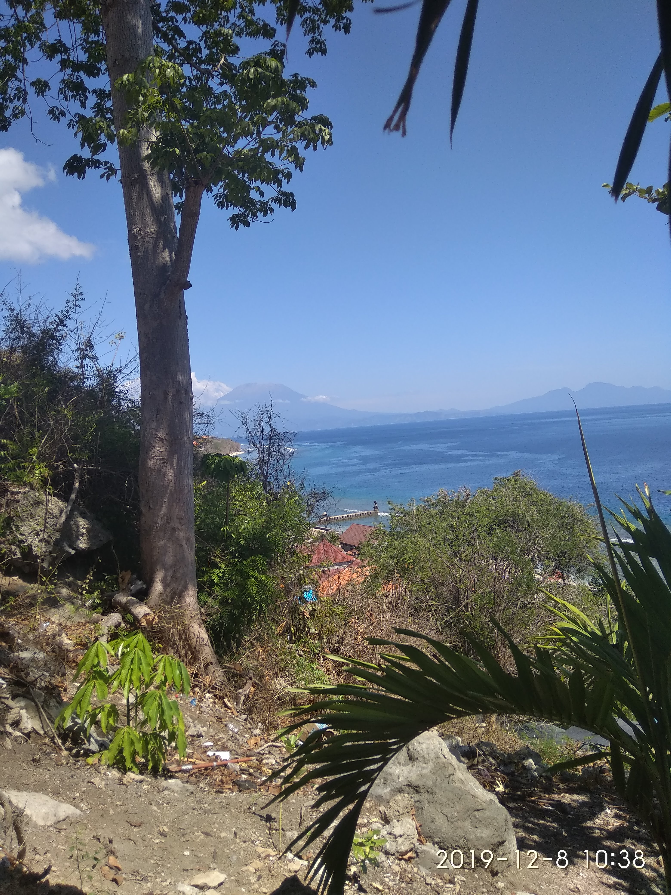
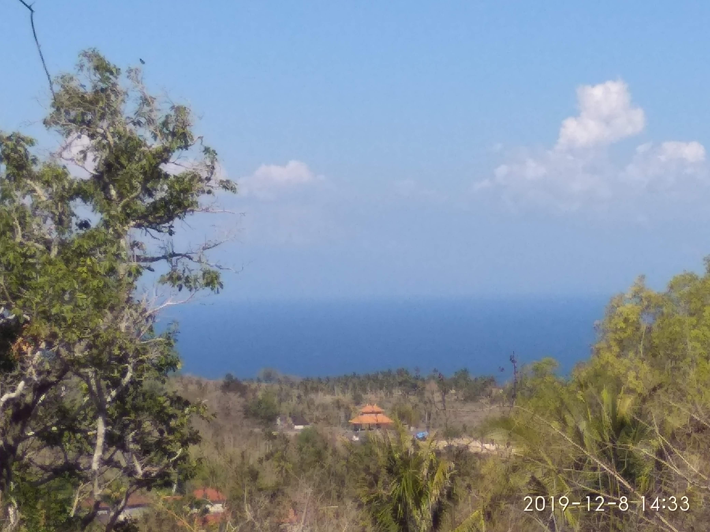

Deskripsi

Peteng di Kintamani...
| Negara | Indonesia |
| Hari jadi | 14 Agustus 1958 |
| Ibu kota | Kota Denpasar |
| Motto | Bali Dwipa Jaya |
| Luas | 5.780,06 km2 |
| Situs web | baliprov.go.id |
| Zona waktu | UTC +08:00 (WITA) |
aka. Pulau Dewata, Pulau Seribu Pura
Peteng di Kintamani...
| Negara | Indonesia |
| Hari jadi | 14 Agustus 1958 |
| Ibu kota | Kota Denpasar |
| Motto | Bali Dwipa Jaya |
| Luas | 5.780,06 km2 |
| Situs web | baliprov.go.id |
| Zona waktu | UTC +08:00 (WITA) |
Dikutip dari Wikipedia, Pulau Bali adalah bagian dari Kepulauan Sunda Kecil sepanjang 153 km dan selebar 112 km sekitar 3,2 km dari Pulau Jawa. Secara geografis, Bali terletak di 8°25′23″ Lintang Selatan dan 115°14′55″ Bujur Timur yang membuatnya beriklim tropis seperti bagian Indonesia yang lain.
Gunung Agung adalah titik tertinggi di Bali setinggi 3.148 m. Gunung berapi ini terakhir meletus pada Maret 1963. Gunung Batur juga salah satu gunung yang ada di Bali. Berbeda dengan di bagian utara, bagian selatan Bali adalah dataran rendah yang dialiri sungai-sungai.
Berdasarkan relief dan topografi, di tengah-tengah Pulau Bali terbentang pegunungan yang memanjang dari barat ke timur dan di antara pegunungan tersebut terdapat gugusan gunung berapi yaitu Gunung Batur dan Gunung Agung serta gunung yang tidak berapi, yaitu Gunung Merbuk, Gunung Patas dan Gunung Seraya. Adanya pegunungan tersebut menyebabkan Daerah Bali secara Geografis terbagi menjadi 2 (dua) bagian yang tidak sama yaitu Bali Utara dengan dataran rendah yang sempit dan kurang landai dan Bali Selatan dengan dataran rendah yang luas dan landai. Provinsi Bali memiliki 4 (empat) buah danau yang berlokasi di daerah pegunungan, yaitu Danau Beratan atau Bedugul, Buyan, Tamblingan, dan Batur. Alam Bali yang indah menjadikan pulau Bali terkenal sebagai daerah wisata.
Ibu kota Bali adalah Denpasar. Tempat-tempat penting lainnya adalah Ubud sebagai pusat kesenian dan peristirahatan, terletak di Kabupaten Gianyar. Nusa Lembongan adalah sebagai salah satu tempat menyelam (diving), terletak di Kabupaten Klungkung. Sedangkan Kuta, Seminyak, Jimbaran dan Nusa Dua adalah beberapa tempat yang menjadi tujuan utama pariwisata, baik wisata pantai maupun tempat peristirahatan, spa, dan lain-lain, terletak di Kabupaten Badung.
Luas wilayah Provinsi Bali adalah 5.636,66 km2 atau 0,29% luas wilayah Negara Kesatuan Republik Indonesia. Secara administratif Provinsi Bali terbagi atas 8 kabupaten, 1 kotamadya, 55 kecamatan, dan 701 desa/kelurahan.
| Utara | Laut Bali |
| Timur | Selat Lombok, Provinsi Nusa Tenggara Barat |
| Selatan | Samudera Hindia |
| Barat | Selat Bali, Provinsi Jawa Timur |
Puputan Margarana...
Perang habis-habisan,
sampai titik darah terakhir.
Dikutip dari Wikipedia, Pertempuran Puputan Margarana merupakan salah satu pertempuran antara Indonesia dan Belanda dalam masa Perang kemerdekaan Indonesia yang terjadi pada 20 November 1946. Pertempuran ini dipimpin oleh Kepala Divisi Sunda Kecil Kolonel I Gusti Ngurah Rai. Dimana Pasukan TKR di wilayah ini bertempur dengan habis habisan untuk mengusir Pasukan Belanda yang kembali datang setelah kekalahan Jepang, untuk menguasai kembali wilayahnya yang direbut Jepang pada Perang Dunia II, mengakibatkan gugurnya seluruh pasukan termasuk I Gusti Ngurah Rai yang kemudian dikenang sebagai salah-satu Puputan di era awal kemerdekaan serta mengakibatkan Belanda sukses mendirikan Negara Indonesia Timur.
Pada waktu staf MBO berada di desa Marga, I Gusti Ngurah Rai memerintahkan pasukannya untuk merebut senjata polisi NICA yang ada di Kota Tabanan. Perintah itu dilaksanakan pada 20 November 1946 (malam hari) dan berhasil baik. Beberapa pucuk senjata beserta pelurunya dapat direbut dan seorang komandan polisi NICA ikut menggabungkan diri kepada pasukan Ngurah Rai. Setelah itu pasukan segera kembali ke Desa Marga. Pada 20 November 1946 sejak pagi-pagi buta tentara Belanda mulai nengadakan pengurungan terhadap Desa Marga. Kurang lebih pukul 10.00 pagi mulailah terjadi tembak-menembak antara pasukan NICA dengan pasukan Ngurah Rai. Pada pertempuran yang seru itu pasukan bagian depan Belanda banyak yang mati tertembak. Oleh karena itu, Belanda segera mendatangkan bantuan dari semua tentaranya yang berada di Bali ditambah pesawat pengebom yang didatangkan dari Makassar. Di dalam pertempuran yang sengit itu semua anggota pasukan Ngurah Rai bertekad tidak akan mundur sampai titik darah penghabisan. Di sinilah pasukan Ngurah Rai mengadakan "Puputan" atau perang habis-habisan di Desa Margarana sehingga pasukan yang berjumlah 96 orang itu semuanya gugur, termasuk Ngurah Rai sendiri. Sebaliknya, di pihak Belanda ada lebih kurang 400 orang yang tewas. Untuk mengenang peristiwa tersebut pada tanggal 20 November 1946 dikenal dengan perang puputan margarana, dan kini pada bekas arena pertempuran itu didirikan Tugu Pahlawan Taman Pujaan Bangsa.
Disini adalah lokasi-lokasi yang saya pernah kunjungi, yang saya akan rekomendasikan kepada anda.
Catatan: Sekarang masa pandemi, jalan-jalannya sesuai prokes ya!Ah, Jatiluwih. Saya suka tempat ini karena berada lumayan tinggi, jadi ada ekstra latar belakang. Jika saja saya ambil foto ini saat padi-nya masih ada dan hijau, pasti foto diatas lebih bagus lagi.
Sedikit informasi dari Wikipedia,
Jatiluwih adalah desa yang berada di kecamatan Penebel, Kabupaten Tabanan, provinsi Bali, Indonesia. Jatiluwih merupakan desa wisata, dengan panorama yang indah disertai dengan sawah berundak. Udaranya sejuk karena berada pada ketinggian rata-rata 700 meter dari permukaan laut.
Nusa Penida. Pulau kecil yang diakses lewat boat. Dekat pulau ini juga ada Nusa Ceningan dan Nusa Lembongan, tapi saya pribadi belum pernah kesana. Jujur saja, pulau kecil ini sangat indah, tapi saat saya dan rombongan keluarga kesana, suasana-nya tegang, apalagi saat pulang dari pulau itu. Jika anda memiliki kondisi anxiety atau thalassophobia, tidak disarankan untuk kesini.
  Saat saya pertama kali kesini waktu akhir 2019, saya terpesona dengan keindahan pulau ini. Mungkin beberapa tanaman liar kering (karena disana sama sekali tidak ada sungai sama sekali, dan curah hujan sangat sedikit waktu itu), tapi pemandangan itulah yang saya sukai. Kuning dengan sedikit hijau, juga dengan latar belakang laut, membuatnya sangat indah.
Informasi tambahan dari Wikipedia,
Nusa Penida adalah sebuah pulau (=nusa) bagian dari negara Republik Indonesia yang terletak di sebelah tenggara Bali yang dipisahkan oleh Selat Badung. Di dekat pulau ini terdapat juga pulau-pulau kecil lainnya yaitu Nusa Ceningan dan Nusa Lembongan. Perairan pulau Nusa Penida terkenal dengan kawasan selamnya di antaranya terdapat di Crystal Bay, Manta Point, Batu Meling, Batu Lumbung, Batu Abah, Toyapakeh dan Malibu Point.
Saya tidak terlalu suka dengan pantai, tapi pantai ini lumayan worth-it untuk dikunjungi. Lokasi ini telah banyak berubah sejak foto diatas diambil. Sayangnya, terakhir kali saya kesini, saya tidak sempat mengambil foto.
Banyak warung, banyak juga orangnya. Saat sore hari menjelang sunset, suasana-nya cocok untuk jalan-jalan sedikit, merenungi hidup ini yang menyedihkan. Eh.
Sayangnya, tidak ada halaman tentang pantai ini di Wikipedia. Jadi anda bisa mencari tahu lebih lanjut di Google Maps.
Salah satu lokasi yang paling sering saya dan sekeluarga kunjungi. Sekarang areanya sudah lebih hijau, tidak seperti di foto. Biasanya sekeluarga suka memancing disini, walau dari tahun kemarin airnya makin surut. Tapi pemandangannya masih bisa dinikmati. Pengunjungnya juga cukup ramai.
Informasi tambahan dari Wikipedia,
Danau Buyan adalah sebuah danau yang terletak di kawasan Desa Pancasari, Kecamatan Sukasada, Kabupaten Buleleng, Bali. Danau ini merupakan satu dari tiga danau kembar yang terbentuk di dalam sebuah kaldera besar. Ia diapit oleh dua danau lainnya, yaitu Danau Tamblingan di sebelah barat dan Danau Beratan di timur. Danau Buyan adalah yang terbesar dari ketiganya. Danau Buyan adalah danau terluas dari 3 danau yang berada di kawasan bedugul dengan luas 490 hektar dengan kedalaman maksimal mencapai 89 meter.